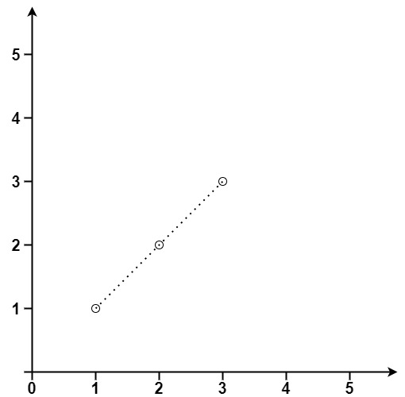

books / company-solutions / Geometry
149. 直线上最多的点数
| 题目信息 | 内容 |
|---|---|
| 难度 | 困难 |
| 核心模式 | 枚举基准点 + 约分方向向量哈希计数共线点 |
| 时间复杂度 | O(n²) |
| 空间复杂度 | O(n) |
题目与约束
给你一个数组 points ，其中 points[i] = [xi, yi] 表示 X-Y 平面上的一个点。求最多有多少个点在同一条直线上。
示例 1：

<strong>输入：</strong>points = [[1,1],[2,2],[3,3]]
<strong>输出：</strong>3
示例 2：

<strong>输入：</strong>points = [[1,1],[3,2],[5,3],[4,1],[2,3],[1,4]]
<strong>输出：</strong>4
提示：
-
1 <= points.length <= 300 -
points[i].length == 2 -
-104 <= xi, yi <= 104 -
points中的所有点 互不相同
核心不变量
经过某个基准点 i 的所有直线由"方向向量"唯一确定；把方向向量用最大公约数约分并统一符号后，同一方向上的点必定共线，计数出现最多的方向再加基准点本身即为答案。
完整推导
思路推导
- 把"直线"拆成"一个点 + 一个方向"
一条直线可以由它经过的某个点 i 和它的方向唯一确定。于是枚举每个点作为基准点 i，统计"经过 i 的各个方向上分别有多少个其他点"，取最大值，再加 1（基准点自己），就是经过 i 的共线点数的最大值。对所有 i 取最大即可。
- 怎么表示方向（关键：约分 + 统一符号）
对 i 之后每个点 j，算方向向量 (dx, dy) = (x_j - x_i, y_j - y_i)。直接用浮点算斜率会丢精度、且竖直线除零，所以改用整数对做键：
- 先除以
g = gcd(|dx|, |dy|)约分，得到最简整数比； - 再统一符号：若
dx < 0就整体取反；若dx == 0把dy取正。
这样 (2,4)、(1,2)、(-1,-2) 都会归一到 (1,2)，而竖直线统一为 (0,1)、水平线统一为 (1,0)。
- 小例子（示例 1：
[[1,1],[2,2],[3,3]]）
以 (1,1) 为基准：到 (2,2) 方向 (1,1)，到 (3,3) 方向 (2,2)→(1,1)，同一方向计数为 2，加基准点自身 = 3。答案 3。
- 收尾
n <= 2 时答案就是 n；否则逐基准点统计并取全局最大。
Java 实现（maxPoints）
import java.util.HashMap;
import java.util.Map;
class Solution {
public int maxPoints(int[][] points) {
int n = points.length;
if (n <= 2) {
return n;
}
int res = 0;
for (int i = 0; i < n; i++) {
// 剪枝：剩余点（含 i 自身）最多 n - i 个，不可能超过当前答案
if (res >= n - i) {
break;
}
Map<String, Integer> slopeCount = new HashMap<>();
int maxCount = 0; // 与 i 共线的其他点最大数量
for (int j = i + 1; j < n; j++) {
int dx = points[j][0] - points[i][0];
int dy = points[j][1] - points[i][1];
int g = gcd(Math.abs(dx), Math.abs(dy)); // 约分
dx /= g;
dy /= g;
// 统一符号，保证相反方向映射到同一个键
if (dx < 0) {
dx = -dx;
dy = -dy;
} else if (dx == 0) {
dy = Math.abs(dy);
}
String key = dx + "," + dy;
int cnt = slopeCount.getOrDefault(key, 0) + 1;
slopeCount.put(key, cnt);
maxCount = Math.max(maxCount, cnt);
}
res = Math.max(res, maxCount + 1); // +1 是基准点自身
}
return res;
}
private int gcd(int a, int b) {
return b == 0 ? a : gcd(b, a % b);
}
}
复杂度
- 时间：O(n²)，外层枚举 n 个基准点，内层枚举其后的点，每次做一次 O(log C) 的 gcd；n ≤ 300 可轻松通过。
- 空间：O(n)，每个基准点维护一个哈希表，最多存 n-1 个方向。
易错点与扩展（面试高频考点）
- 用浮点斜率当键会出错：
dy/dx用double既可能因精度丢失把不同直线误判为同一条，又会在竖直线dx=0时除零；必须用约分后的整数对做键。 - 符号不统一导致漏计：
(1,2)与(-1,-2)是同一条直线的两个方向，若不统一符号会被当成两种斜率，必须规定"dx<0取反、dx==0时dy取正"。 - gcd 未取绝对值：对负数直接求 gcd 可能得到负值，约分后符号混乱；应先
Math.abs再约分。 - 忘记加基准点自身：哈希表只统计了"其他点"，最终要
maxCount + 1；且每个基准点都要新建哈希表，不能复用。 - 重复点问题：本题保证点互不相同，所以无需额外处理重合点；若允许重复，需单独用
same变量统计与 i 重合的点数并一起计入。
力扣原题
C++ 实现
#include <vector>
#include <map>
#include <algorithm>
#include <cstdlib>
using namespace std;
class Solution {
public:
int maxPoints(vector<vector<int>>& points) {
int n = points.size();
if (n <= 2) {
return n;
}
int res = 0;
for (int i = 0; i < n; ++i) {
if (res >= n - i) {
break; // 剪枝
}
map<pair<int, int>, int> mp;
int maxCount = 0;
for (int j = i + 1; j < n; ++j) {
int dx = points[j][0] - points[i][0];
int dy = points[j][1] - points[i][1];
int g = myGcd(abs(dx), abs(dy)); // 约分
dx /= g;
dy /= g;
if (dx < 0) {
dx = -dx;
dy = -dy;
} else if (dx == 0) {
dy = abs(dy);
}
int cnt = ++mp[{dx, dy}];
maxCount = max(maxCount, cnt);
}
res = max(res, maxCount + 1);
}
return res;
}
private:
int myGcd(int a, int b) {
return b == 0 ? a : myGcd(b, a % b);
}
};
Python 实现
from typing import List
import math
class Solution:
def maxPoints(self, points: List[List[int]]) -> int:
n = len(points)
if n <= 2:
return n
res = 0
for i in range(n):
if res >= n - i:
break # 剪枝
slope_count = {}
max_count = 0
x1, y1 = points[i]
for j in range(i + 1, n):
dx = points[j][0] - x1
dy = points[j][1] - y1
g = math.gcd(abs(dx), abs(dy)) # 约分
dx //= g
dy //= g
if dx < 0:
dx, dy = -dx, -dy
elif dx == 0:
dy = abs(dy)
key = (dx, dy)
slope_count[key] = slope_count.get(key, 0) + 1
max_count = max(max_count, slope_count[key])
res = max(res, max_count + 1) # +1 是基准点自身
return res